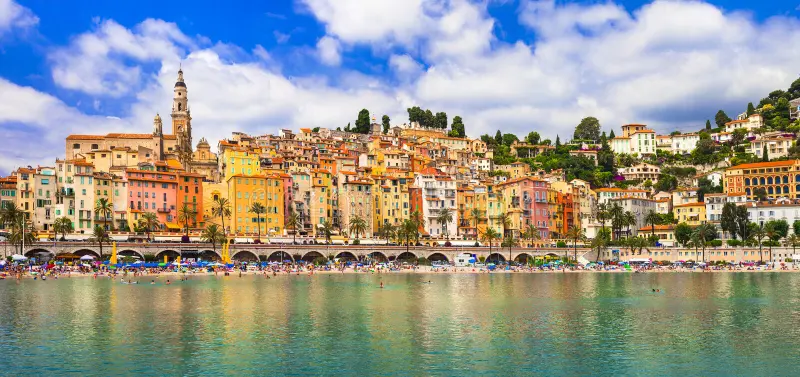

The Louvre Museum
The Louvre Museum in Paris is the world's largest art museum and a historic landmark. It is globally famous for its iconic glass pyramid entrance, stunning classical architecture, and for housing legendary masterpieces like the Mona Lisa.

The Arc de Triomphe
The Arc de Triomphe. It is one of the most famous and impressive monuments in France, built to honor those who fought and died for France during the wars.
- French Revolution
- Napoleonic Wars

Menton
Menton is a charming resort town on the French Riviera, famous for its picturesque old port, colorful pastel houses cascading down the hillside, and beautiful Mediterranean beaches.